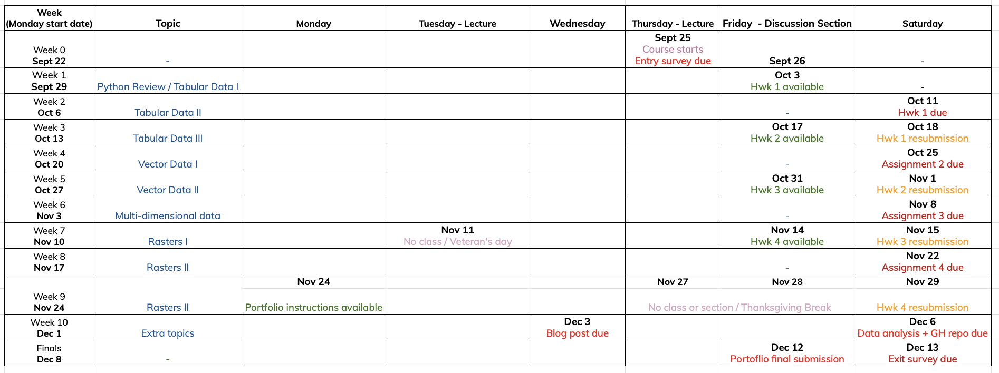
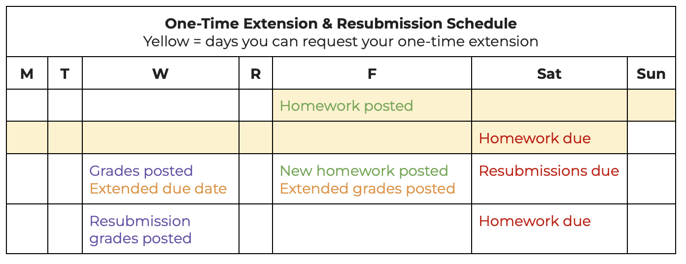

Banner by NASA’s Your Name in Landsat

EDS 220: Working with Environmental Data
Course logistics
This course focuses on hands-on exploration of widely-used environmental data formats and Python libraries. Together, we’ll work with real-world datasets, giving you the skills to analyze and understand the environment around us.
Banner by NASA’s Your Name in Landsat
Instructor
Co-Instructor
Before that:
Research:
Teaching:

Introductions
In the next few minutes, talk with a person next to you and ask them what parts of Santa Barbara have they enjoyed exploring.
You’ll get to introduce your partner at the end.
By the end of this course, you will be able to:



We expect all course participants (including instructors, guests, and students) to be committed to actively creating, modeling, and maintaining an inclusive climate and supportive learning environment for all.
. . .
We expect everyone to treat every member of our learning community with respect.
. . .
Everyone is expected to read and adhere to the Bren School Code of Conduct and the UCSB Code of Conduct.
If you have any kind of disability, whether apparent or non-apparent, learning, emotional, physical, or cognitive, you may be eligible to use formal accessibility services on campus.
. . .
To arrange class-related accommodations, please contact the Disabled Students Program (DSP). DSP will initiate communication about accommodations with faculty.
By making a plan through DSP, appropriate accommodations can be implemented without disclosing your specific condition or diagnosis to course instructors.
In-person attendance to classes and discussion sections is crucial!
If you miss a class you are expected to:
📩 Be proactive: Notify the instructor before it happens or within a day and provide a brief explanation.
🔄 Catch up: Work with the instructors to review any missed material.
🤒 Stay home when you are sick! Prioritize your wellbeing.
Attendance does not count towards your grade, but it will be tracked and absences without communication will be addressed.
UCSB courses are taught in person, so absences for two or more weeks may require a Leave of Absence.
There will not be no option for remote attendance to class except for the class before Thanksgiving break.
Grading Breakdown:
Grade Cutoffs:
You can resubmit your assignments three days after they have received initial feedback.

Why regrades? Revisions, corrections, and improvements are crucial in the learning process! We greatly encourage you to resubmit your revised assignments.
. . .
Example: You submitted your homework on time on the due date and got a 6/10 in the assignment the coming Wednesday. You may build on the feedback received to correct your work and resubmit to improve your grade up to 8/10.
Except for extenuating circumstances, there will be no extension for any assignment. Late submissions will be accepted at the resubmission date and can obtain up to 50% of the assignment points.

The final assignment for the course will be creating data science materials for the students’ online professional portfolio.
Final Assignment:
The 20% grade for the portfolio is divided as follows:
Both a submission and a revised submission addressing all the feedback from the first revision will be needed for these two tasks.

To obtain full participation credit:
. . .
Why come up to present your solutions? Many reasons! To practice public speaking, get comfortable with technical vocabulary, practice explaining a step-by-step solution, practice the material by teaching others, have a taste of live-coding, among others.
GenAI tools (such as ChatGPT) are strongly discouraged for the following reasons:
. . .
Please adhere to these guidelines:
If there are concerns about AI use in your work, your instructor will ask you to meet and talk it through.
If understanding is clearly lacking and this is the first time this happens, you’ll have the chance to revise and resubmit your work for 50% of the original maximum grade within two days.
. . .
Please read the full policy on the course syllabus
Will we have more information about what the homework entails in advance of them being assigned?
Each assignment is posted the specified Friday and covers the materials seen in the last ~2 weeks. Assignments do build on all the previous course content!
. . .
What grading criteria do you use for the homeworks, presentations, and portfolios? Do you use a rubric or specs grading?
We provide detailed rubrics for the homeworks and portfolios. The presentations that count for student participation are just completed/not completed.
. . .
The EDS 296-1F course is not offered. How do we make sure to achieve this necessary portfolio creation?
Thanks for catching this! You should plan to attend these three workshops to create your personal website:
For the discussion section, when presenting will we be taught the material before hand or are we using the material from class to give an example?
The discussion section materials are independent of the class materials and will be available about a day in advance, but you are not exepcted to complete them before section. There are sections listed on the website but discussion sections will be updated this year.
. . .
I see on the presentation calendar that I’m scheduled to present during week 3, but the syllabus says we each present twice. Should I sign up for my second presentation somewhere, or will we be assigned a second date later?
You will only have to present once! This has been fixed on the syllabus. Thanks for bringing this to my attention.